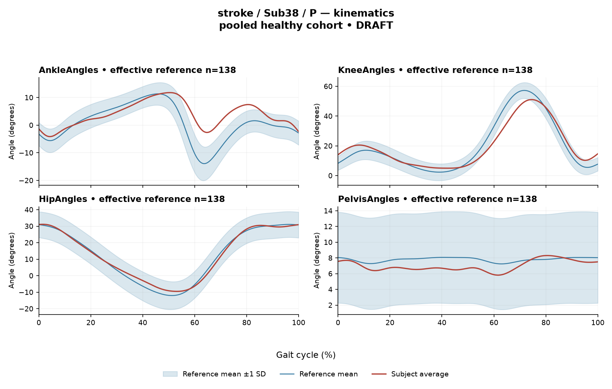

rater1 / Report 32 of 105 / Review spreadsheet row 33
R46397B55216F396B
Case: stroke_Sub38_P
Read this report independently. Record judgments in the workbook. Browser pages do not save ratings.
Report: exact saved text
# Gait Report Interpretation — Sub38_P **Interpretation version:** limited-evidence-v3.1-candidate **Scope:** Research interpretation of a supplied quantitative summary. No diagnosis, no severity grading, no treatment selection. --- ## 1. Objective Findings **Participant and side.** Sub38_P is recorded in the stroke cohort; all data below are from the **paretic** side. The analysis cycle runs from one initial contact of the paretic limb (0%) to the next initial contact of the same limb (100%). These endpoints are two successive occurrences of the same event, not a single instant. **No intermediate gait event (including toe-off) is supplied**, so every timing statement in this report is expressed only as a percentage of the analysis cycle. No percentage is assigned to stance, swing, loading response, mid-stance or pre-swing, and no conventional 60/40 split is applied. **Spatiotemporal values as supplied.** - Gait speed 0.81 m/s. This falls in the ">0.8 m/s" speed band labelled "full community ambulator." That label denotes a **speed band only** — it is not a measurement of walking independence, safety, aid use or real-world mobility, and should not be read as such. - Cadence 99.6 steps/min. - Step length symmetry index −13.1% (successive-footfall definition: each heel at its own initial contact). The negative sign means the **paretic step is the shorter one** by this index. The alternative (instantaneous) definition can yield a different value in some subjects; only the successive-footfall value is available here. **Reference comparability.** The deviation reference used for this subject is a pooled cohort of 138 healthy subjects at 1001 phase points (source: main_cohort_excel), pooling both body sides and all ages, and **not matched to this subject on age or walking speed**. This subject's 0.81 m/s lies just inside the healthy cohort's self-selected speed span of 0.80–1.79 m/s — narrowly above the floor — but lying inside an overall range does **not** demonstrate that a speed- or age-matched subset of the reference actually exists for him. Any difference from the reference described below is therefore a difference from a pooled, non-matched empirical distribution and cannot be partitioned into stroke-specific control change versus walking-speed, age or other effects. No comparison in this report establishes a disease effect, a clinical diagnosis or a mechanism. **Channels available and not available.** - Supplied: sagittal-plane ankle, knee, hip and pelvis angles (ROM and Gait Variable Score); a composite GPS-like score; seven paretic-side EMG envelope summaries (GAS, RF, VL, BF, ST, TA, ERS); two co-contraction indices. - **Not supplied in this input:** non-paretic-side kinematics and EMG, coronal- and transverse-plane kinematics, individual toe-off or any intermediate event, muscle-specific matched normal timing references, stride-level (stride-to-stride) data, raw-signal quality checks, and expert plot review. Age, sex, time post-stroke and stroke clinical scores are outside this input; some of these may exist in the wider release. "Not supplied here" must not be restated as "absent from the source dataset," and none of these is a documented absent recording. --- ## 2. EMG Envelope and Threshold Findings **How these numbers must be read.** The curves are **ensemble-averaged envelopes**. Normalization uses a shared maximum across available strides before averaging, participant-, side- and muscle-specific (not shared between sides); individual strides were not rescaled to their own peaks, and no further amplitude normalization was applied. Amplitudes are therefore **relative envelope values only** — not neural drive, force or strength — and muscles must not be ranked as stronger or weaker from them. An averaged curve cannot show stride-to-stride variability, and the pattern below must not be assumed to recur in every individual stride. Detected intervals are the regions where the **mean envelope** exceeds 20% of that same curve's own peak, with a minimum retained length of 3% of the cycle. They are properties of that averaged envelope under that rule — not physiological onset, offset, contraction duration, or silence outside the intervals. An interval written X%–Y% with X > Y wraps the 100%→0% boundary, i.e. the mean envelope was above threshold continuously across the cycle-defining initial-contact boundary. Gaps between retained intervals mean "no interval met the threshold-plus-duration criteria," which does not establish that the muscle was inactive there. Anatomical actions may be named, but no interval is mapped to clearance, push-off or weight acceptance, and no timing is called normal, early, delayed or prolonged, because the matched timing references required for that judgement are not supplied. | Muscle | Retained interval(s), % cycle | Coverage | Peak norm. amp. | Max \|z\| (location, direction) | |---|---|---|---|---| | GAS (ankle plantarflexor) | 9–53 | 46% | 0.72 | 2.3 above, at 24% | | RF (knee extensor / hip flexor) | 50–60; 63–76; 78–82; 87–45 (wraps) | 86% | 0.67 | 3.5 above, at 28% | | VL (knee extensor) | 92–20 (wraps) | 30% | 0.82 | 2.3 above, at 5% | | BF (knee flexor / hip extensor) | 85–18 (wraps) | 33% | 0.65 | 2.0 above, at 7% | | ST (knee flexor / hip extensor) | 82–22 (wraps) | 42% | 0.61 | 2.2 above, at 10% | | TA (ankle dorsiflexor) | 54–79; 84–26 (wraps) | 67% | 0.55 | 2.1 **below**, at 72% | | ERS (erector spinae) | 44–38 (wraps) | 95% | 0.75 | 6.8 above, at 90% | **Description at the mean-envelope level.** Six of the seven channels (RF, VL, BF, ST, TA, ERS) show boundary-crossing continuity: the averaged envelope remained above its own 20% threshold across the initial-contact boundary. GAS is the one channel whose single retained interval (9–53%) lies wholly inside the cycle and does not touch the boundary; its onset at 9% is a detected threshold crossing of the mean curve, not a physiological onset. RF is fragmented into four retained intervals with high total coverage (86%). ERS coverage is 95% with a single wrapping interval, leaving roughly the 38–44% region without a retained interval; this indicates only that the criteria were not met there, and the supplied evidence does not establish whether that region was genuinely sub-threshold or merely failed the 3% duration rule. Coverage values are rounded, so near-boundary coverage figures cannot be used to classify hidden unrounded values, and no channel here is supported as having "no below-threshold segment." **Max |z| interpretation.** Max |z| is an **extreme-value statistic** — the largest standardized difference from the phase-specific reference mean across all 1001 phase points — not a single-observation z-score, and the conventional 2-SD rule does not apply. In this dataset every one of 109 healthy controls exceeds |z| = 2 on at least one muscle, and per-muscle healthy 95th percentiles for this statistic range from 3.65 (ERS) to 4.61 (TA), higher under leave-one-out. On that basis: GAS 2.3, VL 2.3, ST 2.2, TA 2.1, BF 2.0 and RF 3.5 all fall **below the lowest per-muscle 95th percentile quoted (3.65)**, so none of them is set apart from healthy extreme-value behaviour by the information given. **ERS at 6.8 exceeds its own muscle-specific healthy 95th percentile of 3.65** — the largest standardized difference in this dataset for this subject, located at 90% of the cycle. This is a quantitative difference from a pooled, non-matched reference distribution; it does not by itself establish abnormal trunk muscle physiology, a mechanism or a diagnosis. The location of each max |z| marks where the standardized difference from the reference is greatest — **not** necessarily where the envelope peaks and not any gait event. "Above reference" / "below reference" is relative to the phase-specific reference **mean** at that phase point, not relative to a healthy percentile limit. Note that TA is the only channel whose largest standardized difference is **below** the reference mean (at 72%). **Co-contraction indices.** CCI here is the Falconer–Winter index (2 × common area / summed areas) computed over the **full continuous normalized envelopes across the whole cycle**. It is a whole-cycle overlap index of envelope shapes; it is not simultaneous activation time, not muscular force, and not phase-specific. It can be non-zero even where detected burst intervals do not overlap, because sub-threshold envelope area contributes. It depends on the normalization and envelope pipeline used here, so values and thresholds from other studies or algorithms are not transferable. - **TA vs GAS = 0.38** — inside the supplied healthy interval 0.24–0.59 and essentially at the supplied median of 0.39, marginally below it. - **RF vs BF = 0.71** — inside the supplied healthy interval 0.48–0.83, above the supplied median of 0.68 and nearer the upper endpoint than the lower. Falling inside these empirical intervals does **not** establish physiologically normal co-activation or normal muscle function; falling outside them would not establish pathological co-activation, stiffness, impaired motor control or any diagnosis. **Pipeline note.** The local array audit for this release verified 614 evaluable muscle/subject combinations of 700, with 86 lacking valid nonzero paired samples. This is stated as pipeline context; nothing in this input indicates which, if any, of Sub38_P's channels were affected, and no raw-signal quality check for this subject is available to me. --- ## 3. Kinematic and Reference Comparisons All joint values are **sagittal plane only**; coronal and transverse channels are not part of this input, so nothing here speaks to frontal- or transverse-plane behaviour. | Channel (sagittal) | ROM (deg) | Gait Variable Score | |---|---|---| | Ankle | 15.9 | 5.39 | | Knee | 46.1 | 5.35 | | Hip | 40.6 | 1.70 | | Pelvis | 2.5 | 0.99 | **Composite (GPS-like) = 3.92.** This is the RMS of the per-joint GVS values across the sagittal channels supplied — it is *not* the validated 9-variable GPS and should not be reported as such. Against the supplied composite reference (median 5.1, 95th percentile 10.7), 3.92 sits **below the reference median** and well below the 95th percentile. Within the profile, the ankle (5.39) and knee (5.35) GVS values are the two largest contributors to the composite, while hip (1.70) and pelvis (0.99) are appreciably smaller. GVS and the GPS-like composite are **summary magnitudes of difference from the stated reference across the cycle**; neither localizes the direction of the waveform difference, neither identifies the phase at which it occurs, and neither is a measure of waveform shape. No per-joint GVS reference limits were supplied, so the individual joint scores are reported as magnitudes without a classification. ROM values are reported as measured. **ROM alone does not establish a clinical restriction** in the absence of an appropriate matched comparison, and none is supplied for ROM here — the pelvic sagittal ROM of 2.5 deg in particular is stated as a number, not interpreted as reduced or restricted. The reference used is a pooled calibration cohort (138 subjects, both sides, all ages); its percentiles are **not** matched leave-one-out normal limits, and the same interpretive limits apply whether a subject is in the stroke or the healthy group. A composite below the reference median does not demonstrate normal kinematics, just as a value above it would not demonstrate pathology. **Cross-domain caution.** The step length asymmetry (−13.1%, paretic step shorter), the kinematic deviation profile and the EMG envelope findings are reported side by side; this input provides no basis for asserting a causal link among them. --- ## 4. Questions for Further Clinical Assessment These are open questions for the treating clinician, posed without presupposing that any mechanism or measurement issue has been observed. No treatment is recommended. 1. **Gait events.** Can individual toe-off and any other event markers be retrieved from the release for this trial? Their absence is the single largest constraint on this report — without them, no interval can be placed in a gait phase and no timing can be called early, delayed or prolonged. 2. **Contralateral data.** Are non-paretic-side kinematics and EMG available for this participant? Because the EMG normalization denominator is side-specific and not shared between sides, any between-side amplitude comparison would need explicit handling of that before it could be attempted. 3. **ERS finding.** For the erector spinae max |z| of 6.8 at 90% of the cycle — the one value exceeding its muscle-specific healthy 95th percentile — is a raw-signal and electrode-placement review available, and can trunk-segment kinematics or postural observation be examined to determine whether any physiological or measurement explanation applies? This question is raised because none has yet been established from the data supplied. 4. **Speed and reference matching.** Given that 0.81 m/s sits immediately above the healthy cohort's 0.80 m/s floor, can a speed- and age-restricted reference subset (or a leave-one-out reference) be constructed? Without it, slow-walking effects and stroke-related control differences remain confounded in every comparison above. 5. **Stride-level behaviour.** Are per-stride envelopes and event times retrievable, so that consistency of the boundary-crossing pattern seen in six channels can be examined? Averaged curves cannot address this. 6. **Additional clinical context.** Are age, sex, time post-stroke, stroke clinical scores, assistive device or orthosis use, and observed walking independence and safety documented elsewhere in the release? The ">0.8 m/s" band label carries none of this information. 7. **Symmetry definition.** Would the instantaneous step-length definition be worth computing alongside the successive-footfall value of −13.1%, since the two definitions diverge in some subjects? 8. **Out-of-plane motion.** Should coronal and transverse kinematics be reviewed, given that this entire report is restricted to the sagittal plane? --- *All statements above derive solely from the supplied summary for Sub38_P. Group membership does not establish physiological status in either direction; differences from this pooled empirical reference do not establish disease, mechanism, severity or diagnosis, and no statistical significance is claimed for any value reported.*
Requirements for this report
Fill the corresponding Coverage rows in the workbook. G03 is included once. These are the approved requirements, not prefilled judgments.
| Excel row | ID | Required content | Components / optional content |
|---|---|---|---|
| 167 | R133 | Report walking speed 0.81 m/s AND identify it as near the lower end of the supplied 0.80-1.79 m/s range AND make clear that being in range does not establish speed matching. | AND: speed 0.81 AND near the lower end of the supplied span AND in-range does not establish matching. Same three-component structure as approved Sub50 C01. |
| 168 | R134 | Identify ankle AND knee as the relatively larger reference-relative sagittal joint-curve differences, without requiring their exact ordering. The GPS-like value 3.92 may optionally be compared descriptively with the supplied pooled median 5.1. | AND: ankle and knee relative prominence. Exact GVS values and the composite comparison are optional. Do not require an all-joints-small statement or infer normality, recovery or joint-specific normal limits from the pooled composite background. |
| 169 | R135 | Describe ERS envelope above its phase-specific reference mean at approximately 90% of the analysis cycle (displayed max |z| 6.8). Within each route, muscle identity AND mean-relative direction AND approximate cycle location are required. Exact max-|z| repetition is optional. | Required for each route: muscle identity AND direction relative to the phase-specific reference mean AND approximate cycle location. Optional: exact max |z| value, comparison with the supplied endpoint span (descriptive only). Prohibited: percentile classification, gait phase, physiological onset, severity. |
| 170 | R138 | Describe the supplied successive-footfall step-length index -13.1% and its meaning: the paretic step is shorter. | AND: displayed index and the direction supported by its sign. Optional: formula, definition wording. Acceptable phrasing for small displayed values: "a small difference with the paretic step slightly shorter/longer" (not a cutoff). Prohibited: restating the index as a percentage shortening (E01), severity grades, whole-gait symmetry generalization (E07 issue, not an omission). |
| 171 | G03 | Express a meaningful limitation of reference comparability AND why the comparison cannot establish disease effects or clinical diagnosis; for controls it cannot establish disease or overall normality. One statement may also support a case requirement. | AND: comparability and inference limitations |
Exact model input: system instruction
Draft a research gait-report interpretation for a physical therapist or physiatrist using only the supplied quantitative summary. This is a limited-evidence interpretation task, not diagnosis or treatment selection. Rules: - Describe the participant's actual group and side, available findings, and missing channels accurately. Healthy-group membership does not prove normal physiology; deviations from an empirical reference do not by themselves establish disease. - Treat detected EMG intervals and coverage as properties of an averaged envelope under the stated threshold and duration rule. Do not convert them into physiological onset, offset, duration, continuous contraction, or inactivity outside the intervals. You may describe reported coverage, retained intervals and boundary continuity at the mean-envelope level. Do not infer the same pattern in every individual stride. Say no below-threshold segment only when the supplied evidence establishes that; a rounded coverage value or no retained interval alone does not establish it. - Individual toe-off and matched muscle-specific timing references are not supplied in this task. Use percentages of the analysis cycle. When the input explicitly identifies an initial-contact boundary, you may name that boundary or describe numerical proximity to it. Do not assign stance/swing, loading response, pre-swing, mid-stance or another event to a percentage, or substitute a conventional 60% split. Anatomical muscle actions may be named, but do not map an interval to a gait-phase function such as clearance, push-off or weight acceptance. Do not characterize timing as normal, early, delayed or prolonged without the required evidence. - Respect the supplied normalization method. Relative envelope amplitude is not strength or force, and average curves do not establish stride-to-stride variability. - Report CCI as a whole-cycle overlap index of normalized EMG envelopes. You may compare it with the supplied empirical interval or a supplied median, including proximity to an endpoint. Do not invent an unavailable median. Being within that interval does not establish physiologically normal co-activation or normal muscle function; being outside it does not establish pathological co-activation, stiffness, impaired control or a diagnosis. CCI is not simultaneous activation time, muscular force or a phase-specific result. It depends on normalization and envelope methods; do not transfer values or thresholds from other studies or algorithms. - Describe GVS and GPS-like as summary differences from the stated reference. Neither localizes waveform direction or phase; ROM alone does not establish a clinical restriction without an appropriate comparison. Do not treat pooled calibration percentiles as matched leave-one-out normal limits. - Where using a reference comparison, convey both limited comparability and the inability to establish a disease effect or clinical diagnosis from that comparison. One clear explanation per report is enough; age and speed need not be recited as separate checklist words. A speed inside an overall range does not prove that an appropriate matched reference exists. Apply these limits to controls as well. - The location of maximum |z| is the largest standardized difference from the reference, not necessarily the time of peak envelope amplitude or a gait event. Above/below reference in an EMG row means relative to the phase-specific reference mean at that location, not relative to a healthy percentile limit. - Preserve numerical direction and the displayed precision. Do not invent values, clinical severity grades, statistical significance, or unavailable reference values. Descriptive comparisons with supplied values remain allowed. Near-boundary rounded values do not justify classifying hidden unrounded values. - Clinical follow-up questions may ask whether a mechanism or measurement issue exists; do not presuppose it has already been observed. Do not recommend treatment. If EMG is unavailable, section 2 may simply state that envelope timing, amplitude and CCI cannot be assessed. Reference-only plots do not provide patient EMG. Use exactly these four sections: 1. Objective Findings 2. EMG Envelope and Threshold Findings 3. Kinematic and Reference Comparisons 4. Questions for Further Clinical Assessment
Exact model input: case summary
Candidate interpretation version: limited-evidence-v3.1-candidate
Draft the four-section report using only this subject's supplied evidence.
Metric definitions (read before interpreting any number below):
- All joint angles and ROM values are SAGITTAL PLANE only. Coronal/transverse data are not included.
- The released EMG curves are ensemble-averaged envelopes. For each participant and recorded muscle, normalization uses a shared maximum across the available strides before averaging; individual strides are not independently rescaled to their own peaks. This pipeline uses the released mean curves without further amplitude normalization. In the checked stroke release, the denominator is participant-, side-, and muscle-specific; it is not shared between sides. The local array audit verified 614 evaluable combinations, not all 700; 86 lacked valid nonzero paired samples. Amplitudes are relative envelope values, not absolute neural activation, force, or strength. Do not rank muscles as stronger or weaker from these amplitudes, or infer stride-to-stride variability from an average curve.
- Above-threshold intervals are the regions where the averaged envelope exceeds 20% of that curve's own peak, minimum retained interval 3% of the cycle (by sample count). An interval written as (X%-Y%) with X > Y wraps across the 100%->0% cycle boundary (envelope remains above threshold across the cycle-defining event). An onset of 0% is the analysis-window boundary, not necessarily a physiological onset. "No interval detected" means no region met the threshold + duration criteria; it does NOT mean the muscle is inactive or non-functional.
- CCI is the Falconer-Winter co-contraction index computed on the full continuous envelopes (2*common area / summed areas), so it can be non-zero even when the DETECTED burst intervals of the pair do not overlap (sub-threshold activity contributes).
- The composite kinematic deviation score is the RMS of the per-joint Gait Variable Scores over the sagittal channels provided ("GPS-like", not the validated 9-variable GPS).
- Step length symmetry index: 200*(paretic - non-paretic)/(paretic + non-paretic), in %. NEGATIVE means the paretic-side step is SHORTER. Two operational step-length definitions exist (successive-footfall: each heel's position at its own initial contact; instantaneous: both heels at the same instant) and give different values for some subjects -- the definition actually used is stated next to the symmetry value.
- "Max |z| deviation" is the LARGEST absolute z-score across all 1001 phase points of the cycle, comparing this curve to the healthy-cohort mean/SD at each phase. This is an extreme-value statistic, NOT a single-observation z-score: in this dataset every one of 109 healthy controls exceeds |z| = 2 on at least one muscle, and per-muscle healthy 95th percentiles for this statistic run 3.65 (ERS) to 4.61 (TA) -- higher still under leave-one-out. Do not label a value abnormal by the conventional 2-SD rule; use the healthy reference range given per muscle where provided.
- Healthy-cohort CCI reference (this dataset): RF-vs-BF median 0.68 (2.5th-97.5th pct 0.48-0.83); TA-vs-GAS median 0.39 (0.24-0.59). Composite score reference: median 5.1, 95th percentile 10.7.
- COHORT BACKGROUND (calibration context, not necessarily the exact reference used for this subject -- the actual reference composition is stated in a dedicated line with the subject data below): the full healthy cohort is 138 subjects for kinematics, effective n = 106-109 per muscle for EMG (29 controls have no usable EMG; completeness varies by age), pooling both body sides and all ages; it is not age- or speed-matched to this subject. A leave-one-out run uses one subject fewer than these counts.
- SPEED SUPPORT LIMIT (applies to most stroke subjects in this dataset): the healthy reference cohort's self-selected walking speeds span 0.80-1.79 m/s. If this subject's gait speed is below 0.80 m/s, NO speed-matched healthy reference exists in this dataset -- 41 of the 50 stroke subjects are below that floor. Deviations from the reference then conflate slow-walking effects with stroke-specific control changes, and the two cannot be separated from these data. Describe deviations from the reference as such; do not attribute them wholly to stroke pathology.
- Additional source fields are outside this input. Age, sex and gait events may be available in the release; time post-stroke, stroke clinical scores and a non-paretic-side designation apply only to the stroke cohort, as applicable. Do not claim every listed field exists for every participant. Distinguish not supplied, not applicable and documented absent recordings.
The released paretic-side cycle runs from initial contact of that limb at 0% to its next initial contact at 100%. The cycle boundary may be called initial contact; the endpoints are successive occurrences, not one instant. No intermediate event or phase boundary is supplied.
Model-visible information boundary: the summary contains mean-curve metrics and algorithm-detected intervals, not individual toe-off, matched normal muscle timing, stride-level variability, raw-signal quality checks, or expert plots. Information not supplied here must not be described as absent from the source dataset. Gait-cycle percentages alone do not identify gait phases.
Subject: Sub38_P (group: stroke, affected side: paretic)
Gait speed: 0.81 m/s (full community ambulator (>0.8 m/s)) [The ambulation label denotes a speed band only, not measured walking independence, safety or real-world community mobility.]
Cadence: 99.6 steps/min
Step length symmetry index: -13.1% (step-length definition: successive_footfall)
Composite kinematic deviation score (GPS-like): 3.92
Deviation reference actually used for this subject: 138 healthy subjects (pooled), 1001 phase points, source: main_cohort_excel.
EMG envelope findings:
- GAS: above-threshold interval(s) 9%-53%, 46% of cycle above threshold, peak normalized amplitude 0.72, max |z| vs healthy reference: 2.3 (above reference, at 24% of cycle)
- RF: above-threshold interval(s) 50%-60%; 63%-76%; 78%-82%; 87%-45% (wraps cycle boundary), 86% of cycle above threshold, above threshold across cycle boundary, peak normalized amplitude 0.67, max |z| vs healthy reference: 3.5 (above reference, at 28% of cycle)
- VL: above-threshold interval(s) 92%-20% (wraps cycle boundary), 30% of cycle above threshold, above threshold across cycle boundary, peak normalized amplitude 0.82, max |z| vs healthy reference: 2.3 (above reference, at 5% of cycle)
- BF: above-threshold interval(s) 85%-18% (wraps cycle boundary), 33% of cycle above threshold, above threshold across cycle boundary, peak normalized amplitude 0.65, max |z| vs healthy reference: 2.0 (above reference, at 7% of cycle)
- ST: above-threshold interval(s) 82%-22% (wraps cycle boundary), 42% of cycle above threshold, above threshold across cycle boundary, peak normalized amplitude 0.61, max |z| vs healthy reference: 2.2 (above reference, at 10% of cycle)
- TA: above-threshold interval(s) 54%-79%; 84%-26% (wraps cycle boundary), 67% of cycle above threshold, above threshold across cycle boundary, peak normalized amplitude 0.55, max |z| vs healthy reference: 2.1 (below reference, at 72% of cycle)
- ERS: above-threshold interval(s) 44%-38% (wraps cycle boundary), 95% of cycle above threshold, above threshold across cycle boundary, peak normalized amplitude 0.75, max |z| vs healthy reference: 6.8 (above reference, at 90% of cycle)
Co-contraction indices:
- TA_vs_GAS: CCI = 0.38
- RF_vs_BF: CCI = 0.71
Joint kinematic findings (sagittal plane):
- AnkleAngles: range of motion 15.9 deg, Gait Variable Score 5.39
- KneeAngles: range of motion 46.1 deg, Gait Variable Score 5.35
- HipAngles: range of motion 40.6 deg, Gait Variable Score 1.70
- PelvisAngles: range of motion 2.5 deg, Gait Variable Score 0.99Reference context for expert review
# Reference context: stroke/Sub38_P Mean/SD reference: 138 controls; method pooled; exclusions: []. Effective reference counts: GAS=109, RF=108, VL=109, BF=106, ST=108, TA=107, ERS=106, AnkleAngles=138, KneeAngles=138, HipAngles=138, PelvisAngles=138. The exact system and user input files define what the model receives. The EMG and kinematic plots are supplementary expert evidence, not model inputs. The plotted mean plus/minus one SD is descriptive, not a clinical normal band. Negative lower EMG bands can result from mean minus SD; they do not imply negative recorded EMG. The max-|z| p95 span in the input is pooled calibration context. Complete muscle-specific LOO thresholds are not supplied; an appropriately indeterminate classification is allowed. Controls are excluded from their own mean/SD reference, but cohort-level calibration has prior reference-data reuse. It is not an independent matched clinical limit. GPS-like is a four-channel sagittal composite, not the validated nine-variable GPS. The pooled median/p95 background is not a matched LOO normality boundary. CCI uses continuous normalized envelopes over the whole analysis cycle. An empirical interval comparison does not establish normal muscle function. Threshold intervals and rounded coverage describe the averaged envelope. Rounded 100% coverage and one interval do not prove absence of short below-threshold gaps. Use the group-specific cycle and normalization provenance in the actual input. No individual intermediate gait events or matched normal muscle timing are supplied. Administrative age and published bilateral speed are not added to this input. Expert-visible plots do not justify requiring unseen direction, phase or morphology. For a new-case requirement, cite exact input evidence. Select clinically useful descriptive content without inferring a diagnosis or severity from rank alone.
EMG and kinematic curves
The curves are supplementary expert evidence. Only the saved text inputs were supplied to the model; do not require curve-only observations.
EMG

Kinematics
